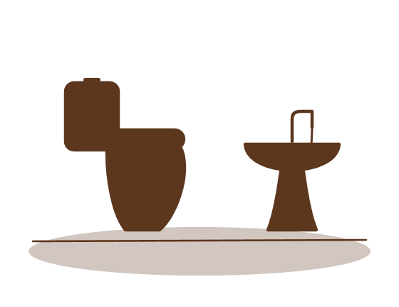
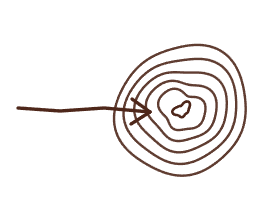
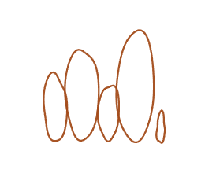

Elaborate strategic plans sit on shelves. Meanwhile, a single public toilet can take two years and cost $1.7 million.
Over the past year I asked 44 practitioners one question: what actually made your program work? The same pattern kept coming up. Let's start where it breaks.
In October 2022, the California Department of Parks and Recreation announced $1.7 million for a single restroom. Projected timeline: two years. Projected opening: 2025.

State Assemblyman Matt Haney called it "inexplicable." The story went national. The ribbon-cutting was canceled.
Every one defensible on its own.
But none of it explained the core problem.
Four things
at once.
The toilet is a project, not a program. Every failure here comes from missing scaffolding. A program would have held it together. A program:
Four choices,
made together.


A program is a narrative for change.
A story that moves a whole community to act, and to keep acting. A lasting story carries the same four things.
The ones a grandmother passes to her grandchildren.
The stories a community keeps telling across generations, because they changed something real.
The good programs are telling a story people carry forward and live.
Does it know what good it is for?
Does it hold the whole community?
Do its choices match its claims?
Will it survive the people who started it?
San Francisco missed all four. Colorado built for all four. Programs that deliver hold all four together.